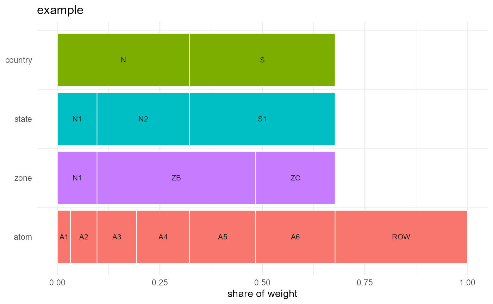
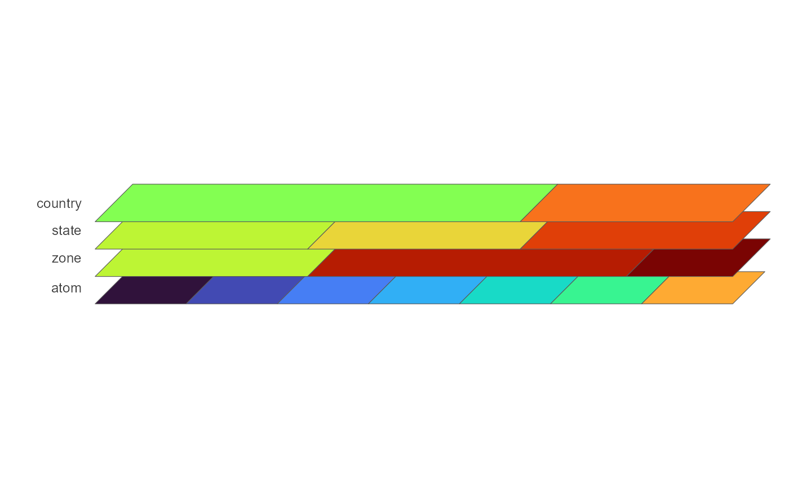

One function for every geoscale figure, selected by type: the structure
icicle (default; needs no geometry), the axonometric stack of map planes,
and a choropleth map of one geoframe. autoplot() on a GeoScale
returns the same ggplot; plot() draws it and returns it invisibly.
Usage
gg_geoscale(
object,
type = c("icicle", "stack", "map"),
data = NULL,
z = NULL,
rule = "weighted_mean",
weight = NULL,
palette = NULL,
labels = NULL,
fill = c("geoframe", "region"),
geoframe = NULL,
precision = 0,
view = NULL,
angle = NULL,
ratio = NULL,
shear = 0.45,
depth = 0.55,
gap = NULL,
rotate = 0,
direction = c("up", "down"),
colour = "grey35",
linewidth = 0.2,
frame = NULL,
frame_fill = NA,
connectors = FALSE,
outline = NULL,
outline_colour = "grey20",
outline_linewidth = 0.6,
...
)
# S3 method for class 'GeoScale'
autoplot(object, ...)
# S3 method for class 'GeoScale'
plot(x, ...)Arguments
- object
A
GeoScale. The stack and the map need geometry attached withattach_geometry_geoscale()and the sf package.- type
The figure:
"icicle"(default),"stack"or"map"; see the sections below. An argument that belongs to another type is an error, not ignored.- data, z
Colour the figure by a value instead of by structure.
datais a data.frame with the value column named byz;zis required wheneverdatais given. The icicle and the stack takedatakeyed by the atom geoframe and recast the value up to every coarser geoframe (seerule), so the whole figure shares one continuous fill scale; the map takesdatakeyed bygeoframe. Legend title vialabs(fill = ).- rule
Icicle and stack, with
data: the rule that recastszfrom the atoms to each coarser geoframe ("weighted_mean"default; seerecast_geoscale())."share"colours every band or plane by each region's share within the one above it on a fixed linear 0..1 scale;"logshare"is the same on a fixed log10 percent scale.- weight
Icicle and stack: the weight column. On the icicle it sets the rectangle widths; with
rule = "weighted_mean"it is also the recast weight.NULLuses the geoscale's default weight.- palette
Fill scale.
NULL(default) is the type's own: viridis"H"on the icicle and the stack, ggplot2's default gradient on the map. A viridis option letter ("A".."H") opts into that palette on any type.NAadds no fill scale at all, so a custom one can be supplied, e.g.energypal::scale_fill_energy_b().- labels
What is labelled.
NULL(default) is the type's own. Icicle:TRUE(default) draws the region names on the rectangles,FALSEnone. Stack: a character vector of geoframes whose regions get their names on the plane (TRUE= all; default none). Map:TRUEdraws the region names (default none). Names are the display names of the@meta$labelscolumn where unambiguous, else the codes.- fill
Icicle: what to colour by without
data,"geoframe"(default) or"region".- geoframe
Map: the geoframe to draw. Defaults to the atom geoframe.
- precision
Stack and map: GEOS precision for the dissolve, forwarded to
geoscale_geometry(). Default0= off.- view
Stack: a predefined point of view –
"oblique"(the shear/depth default),"top-down","cavalier","cabinet","military","isometric","dimetric","trimetric","perspective"(receding planes shrink) or"pyramid"(receding planes grow: the coarsest geoframe is the small top, the finest the wide base).- angle, ratio
Stack: oblique view by angle (degrees of the receding axis) and foreshortening ratio –
e2 = ratio * (cos(angle), sin(angle)). Overridden byview.- shear, depth, gap
Stack: raw receding-axis components (
e2 = (shear, depth); used when neitherviewnorangle/ratiois given) and the vertical spacing between planes: one value for every pair, or one per pair from the top down.gap = NULL(default) spaces planes almost touching, with a slight overlap. Under"perspective"and"pyramid"each spacing is scaled with the planes it separates, so it stays uniform relative to their size.- rotate
Stack: in-plane rotation of each plane (degrees, counter-clockwise).
- direction
Stack:
"up"(default) stacks the coarsest geoframe on top;"down"puts it at the bottom.- colour, linewidth
Stack: region border colour and width, recycled across the planes (so
colour = c("white", "grey40", "white")styles one plane per entry). Defaults"grey35"and0.2, ggplot2's own sf polygon border.- frame
Stack: draw each plane's outline (the footprint box run through the same projection) as a guide; curved shapes are much easier to read in oblique views with the plane edges visible.
TRUEuses"grey80", a colour string uses that colour,NULL(default) draws no frames.- frame_fill
Stack: fill for the plane sheets. Best mostly transparent, e.g.
frame_fill = ggplot2::alpha("grey60", 0.12); the panes then read as glass sheets. Setting a fill draws the frames even withoutframe;NA(default) = no fill.- connectors
Stack: dashed lines joining the corresponding frame corners of adjacent planes, the vertical guides of the stack.
TRUEuses the frame colour, a colour string picks its own; defaultFALSE.- outline
Stack: coarser geoframe(s) whose borders are drawn over every finer plane, so the groups they form are visible at the finer resolution (
outline = "zone"marks the zones on the region plane).NULL(default) = none.- outline_colour, outline_linewidth
Stack: colour and width of the
outlineborders, recycled overoutline. Defaults"grey20"and0.6.- ...
Fixed aesthetics for the figure's main layer: the icicle's
geom_rect(), the stack's and the map'sgeom_sf()(e.g.alpha = 0.8).- x
Icicle (type = "icicle")
One row per geoframe, coarsest at the top, each region a rectangle whose
width is its share of weight. Shows the GeoScale itself and needs no
geometry. With data, each band's rectangles carry the value recast to
that geoframe.
Stack (type = "stack")
One sheared map plane per geoframe, coarsest on top: the same atoms
dissolved at each resolution, under a chosen point of view. Without
data, each plane is coloured by its own regions.
Map (type = "map")
A choropleth of one geoframe. Without data, the region outlines are
drawn. Callers that know what their numbers mean (which variable,
extensive or intensive, what units) prepare a data.frame keyed by
geoframe and hand it here rather than draw their own geom_sf().
Methods
autoplot(object, ...) is gg_geoscale(object, ...). plot(x, ...)
prints that figure and returns it invisibly, like base plot().
Examples
if (requireNamespace("ggplot2", quietly = TRUE)) {
gs <- geoscale_example()
gg_geoscale(gs)
ggplot2::autoplot(gs) # the same figure
}

if (requireNamespace("ggplot2", quietly = TRUE) &&
requireNamespace("sf", quietly = TRUE)) {
# the stack and the map need geometry: one unit square per atom
gs <- geoscale_example()
n <- length(geoscale_regions(gs, "atom"))
square <- function(i) {
sf::st_polygon(list(cbind(c(i, i + 1, i + 1, i, i), c(0, 0, 1, 1, 0))))
}
geom <- do.call(sf::st_sfc, lapply(seq_len(n) - 1, square))
gs <- attach_geometry_geoscale(gs, geom)
gg_geoscale(gs, type = "map", geoframe = "state")
gg_geoscale(gs, type = "stack", view = "cabinet")
}
